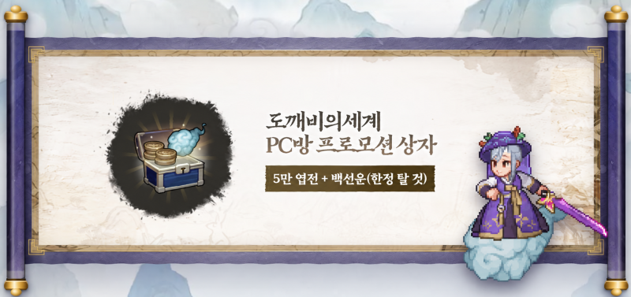
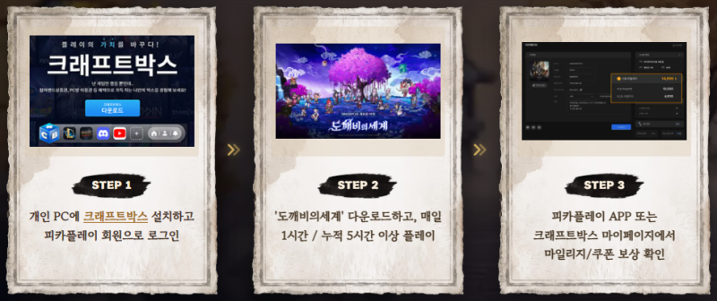
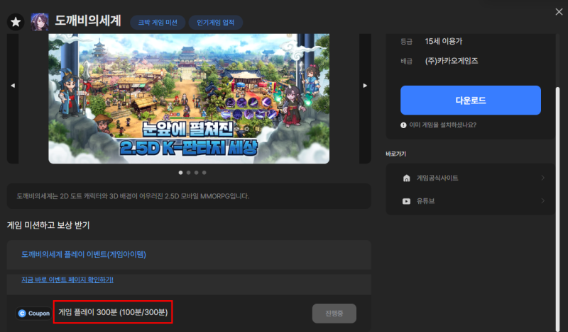
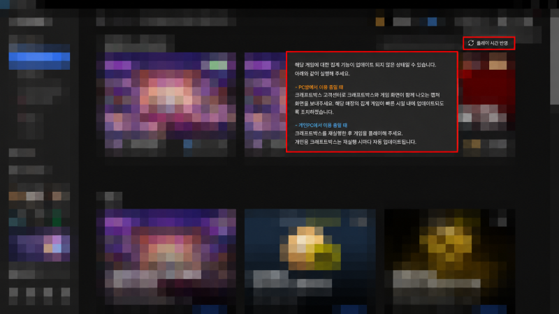

도깨비의세계 백선운 얻는 법, PC방 안 가고 집 PC 크래프트박스로 누적 5시간 채우는 5단계
도깨비의세계 한정 탈것 백선운은 PC방에 가지 않아도 집 PC에서 받을 수 있어요. 'PC방 이벤트'라고 해서 저도 가야 하나 싶었는데요, 공식 문구에 'PC방 또는 개인 PC'라고 나란히 적혀 있더라고요. 2026년 10월 13일(화) 기준으로 '도깨비의세계 론칭 기념 피카플레이 PC방 이벤트'에서 백선운이 어디에 들어 있는지, 집에서는 어떤 순서로 5시간을 채우는지, 쿠폰은 어디에 넣는지까지 정리했어요.
한정 탈것 '백선운' 탑승 모습 (출처: 공식 포럼 공지 14412)
백선운은 어떤 쿠폰에 들어 있나요?
백선운은 'PC방 프로모션 상자' 쿠폰에 엽전 (귀속) 50,000개와 함께 들어 있는 한정 탈것이에요. 이 쿠폰은 이벤트 기간 안에 크래프트박스를 통해 도깨비의세계를 누적 5시간 플레이하면 받을 수 있고, 장소는 피카플레이 가맹 PC방이든 개인 PC든 가능해요. 이벤트 페이지에 'PC방 또는 개인 PC에서 모두 참여가 가능'이라고 나와 있습니다.

PC방 프로모션 상자 구성 안내 (출처: 크래프트박스 공식 블로그)
| 항목 | 내용 |
|---|---|
| 진행 기간 | 10월 12일(월) 11:00 ~ 11월 1일(일) 23:59 |
| 참여 대상 | 피카플레이 회원 |
| EVENT1 출석 체크 | 매일 1시간 이상 플레이, 3일 모두 출석하면 최대 5,000 마일리지 (DAY 1 1,000 · DAY 2 2,000 · DAY 3 2,000) |
| EVENT2 누적 플레이 | 누적 5시간 달성 시 인게임 쿠폰 'PC방 프로모션 상자' 지급 (백선운 포함) |
| 쿠폰 등록 기한 | 11월 30일(월) 23:59 |
표의 최대 5,000 마일리지는 선착순이라, 10월 12일(월) 19:55 기준으로 1일 차 마일리지가 소진됐어요(공지 14412). 1일 차 미션을 달성했다면 마일리지를 못 받았어도 2일 차에는 참여할 수 있답니다. 백선운이 걸린 쿠폰은 이 마일리지와 별개인 누적 5시간 미션입니다.
집 PC로 누적 5시간을 채우는 순서는 어떻게 되나요?
집 PC에서는 크래프트박스를 설치해 피카플레이 회원으로 로그인한 뒤, 도깨비의세계 PC 버전을 플레이하면 시간이 쌓여요. 이벤트 페이지는 이 흐름을 설치 · 플레이 · 보상 확인 3단계로 보여 주는데요, 중간 확인 지점까지 넣으면 5단계가 돼요.

개인 PC 참여 방법 STEP 1~3 (출처: 크래프트박스 공식 블로그)
- 크래프트박스 설치 — 크래프트박스 공식 사이트(craftbox.co.kr)의 '다운로드' 버튼으로 개인용 프로그램을 깔아요.
- 피카플레이 회원으로 로그인 — 이벤트 대상이 피카플레이 회원이잖아요, 이 계정으로 들어가야 해요.
- 혜택박스에서 참여 가능 여부 보기 — 크래프트박스 → 혜택박스 → 미션 상세 팝업에서 도깨비의세계 이벤트에 참여할 수 있는지 먼저 확인해요.
- 도깨비의세계 PC 버전 플레이 — 참여는 PC 버전만 인정되고, 모바일 앱 플레이어로 하는 건 인정되지 않아요. 설치가 처음이라면 맨 아래 같이 보기의 설치 6단계 글을 참고하세요.
- 진행 시간 확인 — 크래프트박스의 도깨비의세계 상세 화면에서 'Coupon 게임 플레이 300분' 줄의 진행 시간(분)을 보면서 300분까지 채워요.

진행 시간은 이 줄에서 보여요, 100분은 공식 예시 값이에요 (출처: 크래프트박스 공식 블로그)
누적 5시간은 300분이에요. 공식 문구는 '이벤트 기간 내 누적 5시간'이라 일수 조건은 적혀 있지 않아서, 나눠서 채우든 몰아서 채우든 기간 안에만 맞추면 되는 걸로 읽히는데요, 반영이 늦어지는 구간이 있으니 마지막 날에 몰아 채우는 건 피하는 게 좋겠죠~
플레이 시간이 안 올라갈 때는 어떻게 하나요?
플레이 시간이 안 올라가면 반영 지연을 기다리고, '플레이 시간 반영' 버튼을 눌러 보고, 그래도 안 되면 크래프트박스를 껐다 켜는 순서로 보면 돼요. 전부 공식 안내에 나온 방법이랍니다.
- 기다리기 — 게임 플레이 시간이 반영되기까지 최대 30분 정도 늦어질 수 있어요.
- '플레이 시간 반영' 버튼 — 크래프트박스 최신 버전 기준으로 우측 상단에 이 버튼이 있고, 눌러서 시간을 갱신할 수 있어요. 공식 블로그 업데이트 가이드는 최신 버전일 때만 쓸 수 있는 버튼이라고 안내해요.
- 크래프트박스 재실행 — 작업 표시줄의 크래프트박스 아이콘을 우클릭해 '종료'(안 보이면 숨겨진 아이콘 ∧ 안)한 뒤 다시 켜고, '크래프트박스 업데이트' 창이 끝나면 게임을 실행해서 미션 영역에 집계되는지 봐요. 개인용은 다시 켤 때마다 자동으로 업데이트돼요.

우측 상단 붉은 상자가 '플레이 시간 반영' 버튼이에요 (출처: 크래프트박스 공식 블로그)
크래프트박스와 PC 런처 중 뭘로 켜야 하는지는 공식 안내에 없어요
도깨비의세계를 어떤 아이콘으로 실행해야 시간이 쌓이는지는 공식 안내에 따로 없어요. 공지에는 '크래프트박스를 통해 도깨비의세계 누적 5시간 플레이'라고, 이벤트 페이지에는 '크래프트박스 설치 후 참여'·'크래프트박스 로그인 후 참여'라고만 적혀 있습니다.
유튜브 채널 '깨비야'의 영상은 평소 쓰던 PC 런처로 켰는데도 시간이 올랐다고 소개하니 참고만 해 주세요. 어느 쪽으로 켜든 5번 단계에서 보이는 진행 시간(분)이 오르는지가 기준이고, 끝내 안 오르면 이벤트 페이지에 안내된 피카플레이 또는 크래프트박스 고객센터 1:1 문의를 이용하세요.
쿠폰은 어디서 확인하고 어디에 넣나요?
쿠폰은 크래프트박스 마이페이지나 피카플레이 앱에서 확인하고, 게임 안 쿠폰등록 메뉴나 쿠폰 코드 입력 페이지에서 등록해요. 쿠폰은 피카플레이 계정으로 자동 지급돼요.
마이페이지에서 쿠폰 번호를 확인하는 화면이에요
- PC · 안드로이드: 게임 접속 → 메뉴 → 설정 → 계정 → 쿠폰등록에 쿠폰 번호를 넣어요.
- iOS: 쿠폰 코드 입력 페이지에서 회원번호와 쿠폰번호를 넣어요. 공지의 쿠폰 입력 안내도 같은 페이지예요.
입력 화면 위치는 쿠폰 4종 정리 글에 그림과 함께 있어요. 쿠폰은 도깨비의세계 계정당 1회 등록할 수 있고, 기한은 위 표에 적어 둔 대로예요.
놓치기 쉬운 건 뭐가 있나요?
놓치면 아쉬운 건 변경 가능성이에요, 이벤트가 사전 고지 없이 바뀌거나 일찍 끝날 수 있거든요.
| 항목 | 공식 문구 | 독자가 할 일 |
|---|---|---|
| 참여 횟수 | 쿠폰은 계정당 1회 지급, 누적 플레이 미션은 중복 참여 불가 | 쓸 계정을 정해서 한 번만 참여 |
| 변경·조기 종료 | 공지는 사정에 따라 변경되거나 일찍 끝날 수 있다고 안내, 이벤트 페이지는 소진 현황에 따라 조기 종료 또는 연장 | 미션은 일찍 채우고 공지를 다시 확인 |
| 부정 참여·문의 | 비정상적인 방법으로 참여하면 이벤트 대상에서 제외될 수 있음, 이벤트 문의는 피카플레이 또는 크래프트박스 고객센터 1:1 | 정상 플레이로만 채우고 문의는 1:1로 |
공지에는 조건을 달성한 모든 도사님께 지급한다는 문구도 있어서, 일찍 끝나는지는 어느 쪽으로도 단정하기 어려워요.
자주 묻는 질문
Q. 백선운은 능력치가 있나요?
도깨비의세계 탈것은 일반과 특별 등급으로 나뉘고 별도 능력치는 없어요. 출처는 가이드 7856이에요. 백선운이 어느 등급인지는 이벤트 공지에 적혀 있지 않답니다.
Q. 쿠폰 보상은 어느 캐릭터 우편함으로 오나요?
게임 안 쿠폰 입력창을 쓰면 입력한 캐릭터의 우편함으로, 쿠폰 입력 페이지를 쓰면 최초 접속한 캐릭터나 접속 중인 캐릭터의 우편함으로 들어와요. 지급이 늦어질 수 있다는 안내도 가이드 7733에 같이 있거든요.
Q. 출석 체크로 받는 마일리지는 어디에 쓰나요?
유효기간은 90일이고, 피카 가맹 PC방 결제나 모바일 문화상품권 교환에 쓸 수 있어요. 이벤트 페이지 기준이에요.
도깨비의세계 백선운 얻는 법 정리
챙길 건 크래프트박스 설치와 PC 버전 300분, 그리고 쿠폰 등록 이 세 가지예요. 저라면 오늘 안에 크래프트박스부터 깔아 두고, 틈틈이 진행 시간(분)이 올라가는지만 보면서 기간 안에 채워 둘 것 같네요. 다들 백선운 구름 타고 즐겜하세요~
✔ 도깨비의세계 같이 보기 좋은 내용
· 도깨비의세계 쿠폰 4종 정리, 코드 입력하는 법과 마감일 한눈에
· 도깨비의세계 라이브 방송 감사 쿠폰 3종, 도깨비의다짐·약속·마음 보상과 사용 기한 정리
· 도깨비의세계 PC 설치 6단계, 이 게임을 열 수 없음 뜰 때 Google Play Games 재실행하는 법
참고한 곳 (2026.10.13 기준)
· 공지 14412: 론칭 기념 피카플레이 PC방 이벤트
· 도깨비의세계 x 피카플레이 미션 이벤트 페이지
· 도깨비의세계 쿠폰 코드 입력
· 크래프트박스 공식 블로그: 도깨비의세계 PC방 이벤트 안내
· 크래프트박스 공식 블로그: 개인용 크래프트박스 업데이트 가이드